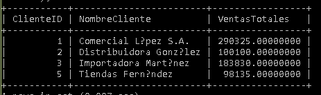

Código SQL
SELECT
c.ClienteID,
c.NombreCliente,
SUM(dp.Cantidad * dp.PrecioVenta * (1 - dp.Descuento / 100)) AS TotalVentas
FROM Clientes c
INNER JOIN Pedidos p
ON c.ClienteID = p.ClienteID
INNER JOIN DetallesPedido dp
ON p.PedidoID = dp.PedidoID
WHERE p.Estado = 'Entregado'
GROUP BY c.ClienteID, c.NombreCliente
HAVING TotalVentas >
(
SELECT AVG(TotalCliente)
FROM (
SELECT
SUM(dp2.Cantidad * dp2.PrecioVenta * (1 - dp2.Descuento / 100)) AS TotalCliente
FROM Pedidos p2
INNER JOIN DetallesPedido dp2 ON p2.PedidoID = dp2.PedidoID
WHERE p2.Estado = 'Entregado'
GROUP BY p2.ClienteID
) AS Subconsulta
);
Resultado de la Consulta
En esta sección se presenta la captura del resultado obtenido al ejecutar la consulta en MySQL, donde se muestran únicamente los clientes cuyas ventas superan el promedio general.
